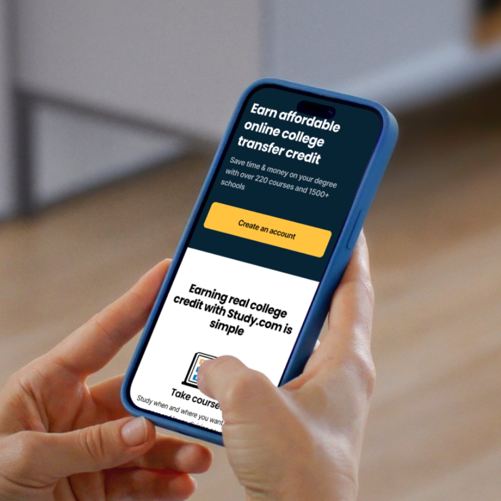

Scott Dickie
Scott Dickie
Accelerating growth for multiple B2C businesses
Lead design teams across all aspects of the business as well as created high performing teams across functions - Product, Growth, Marketing and Engineering. As Head of Design & Research, I transformed the design organization into a strategic function influencing product, growth, marketing, and engineering outcomes. I elevated the team’s craft, performance through cultural and operational change, aligning design with business goals and hands on coaching.
When I joined, the design team was underperforming and lacked the foundational skill sets required for product innovation. There was no cohesive design vision, no design system, and no leadership in place to mentor or guide the team toward building high-quality, impactful products. This resulted in inconsistent user experiences, fragmented design execution, and a lack of credibility across cross-functional partners. Rebuilding trust, upskilling the team, and redefining the design culture were critical to moving the business forward.


Built cross-functional alignment through design sprints, team restructuring, and by embedding design leads into product teams. Bridged gaps between brand, AI, and product through new design operations and executive communication channels.
Launched a company-wide rebrand and AI-first product redesign, increasing NPS and streamlining internal workflows.
Reduced vendor costs by insourcing creative services, doubling execution speed.
Established scalable design systems and processes, setting the foundation for future growth.